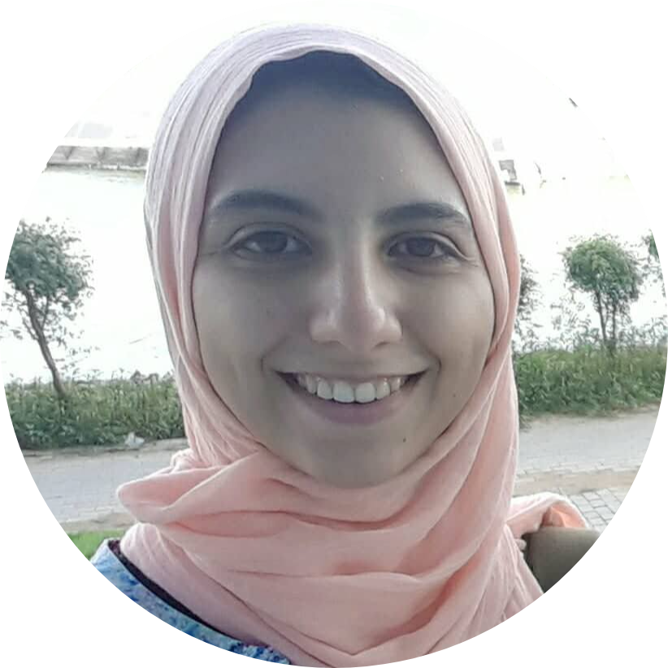

|  |
Yara Amr-Allah
Cloud DevOps Engineer who loves coding!
Linkedin
I am a technology geek, and I love exploring new trends.
I believe that knowledge diversity and curiosity can lead to better understanding and solid ground knowledge.
I am originally an electronics and communications engineer with some more experience in firmware building and device architecture.
As I have decided to learn more about DevOps and automation technologies, my goal is to have a comprehensive understanding of projects going from the transistor level to the cloud.
I have adequate programming and problem-solving skills, and I am currently training to become a DevOps engineer.
I believe that I am a fast learner and a quiet flexible person.
Besides my technical skills, I believe I can exhibit my work and document it subtly. I am also known for my positive team spirit and impact.
Wait, I have some excellent language skills too! :)
|